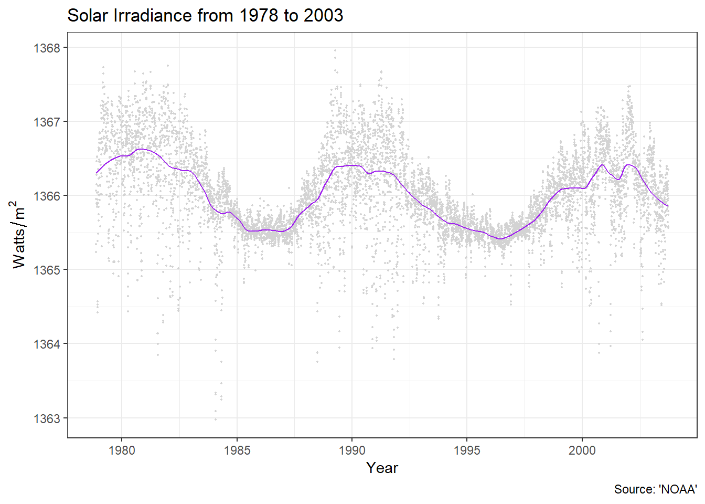
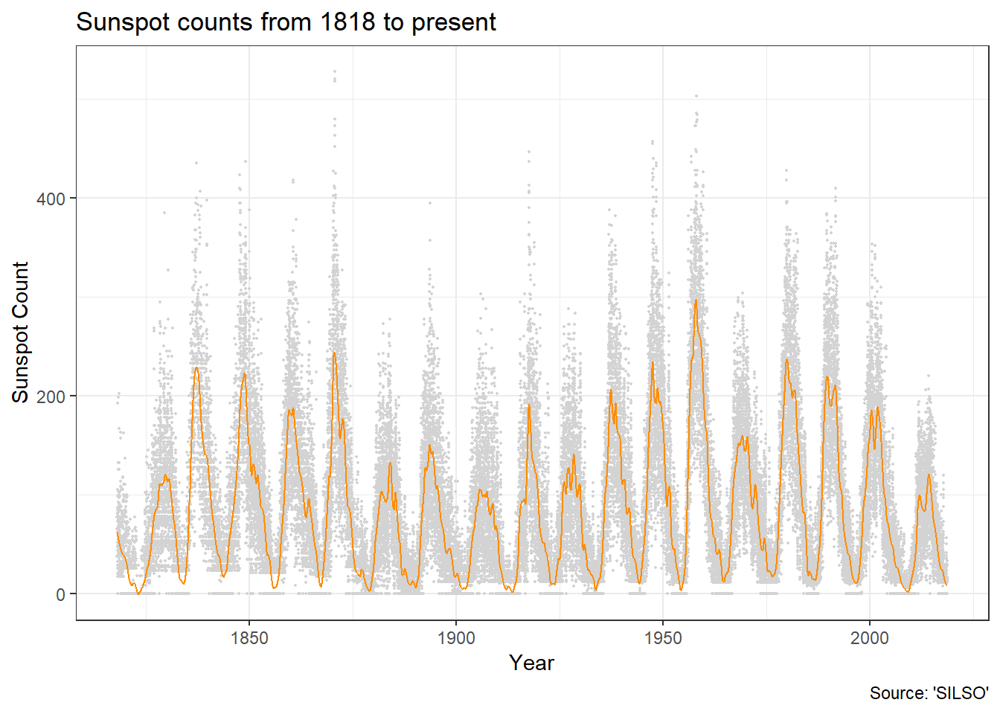
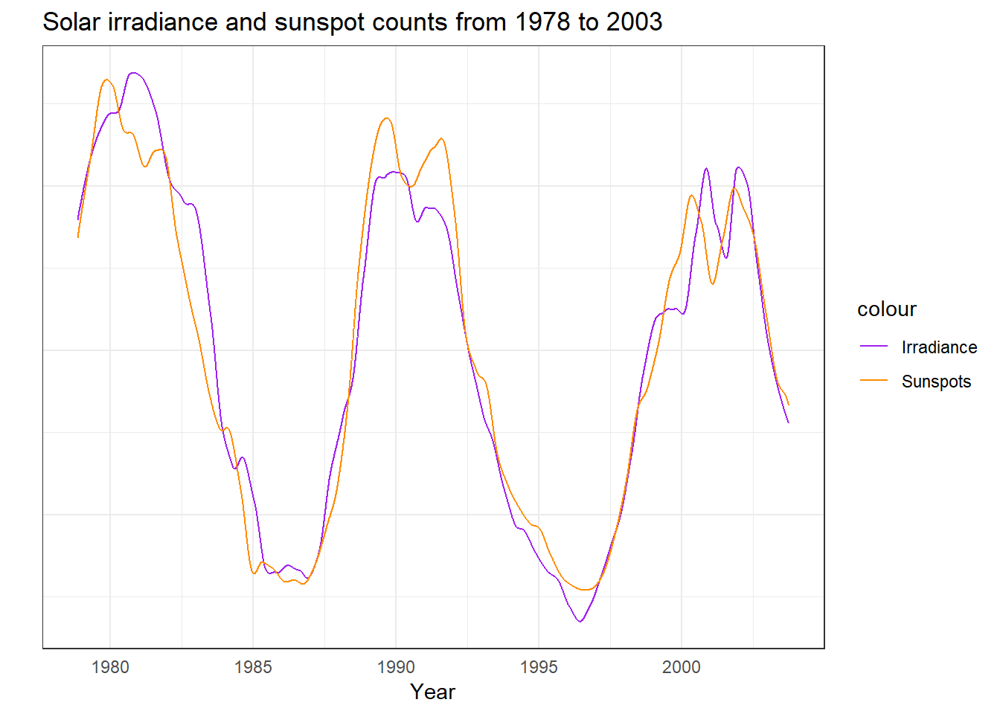
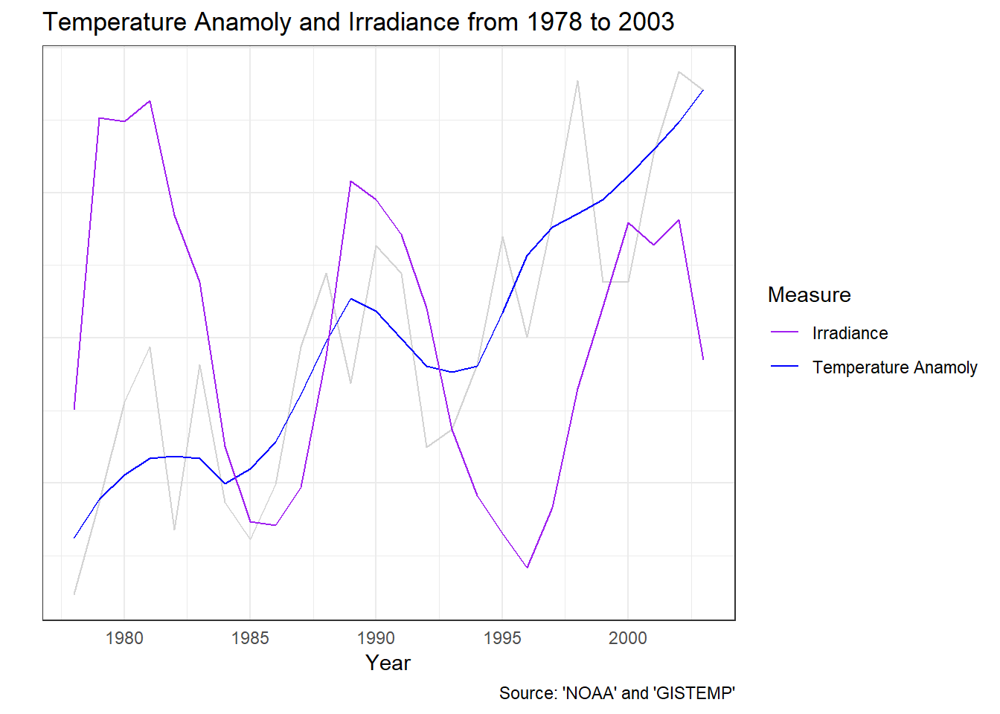
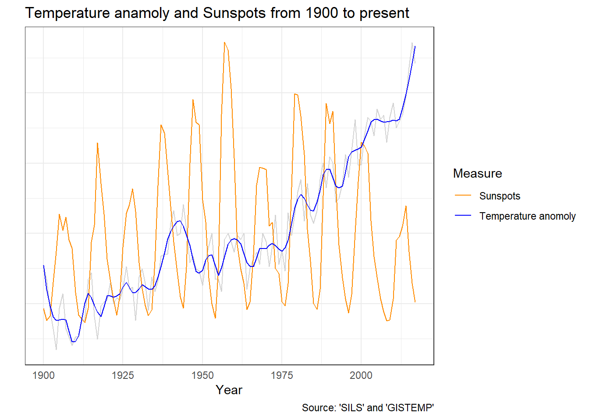

So far in this series we’ve looked at global temperature, carbon dioxide and the way they are relating over the last 2,000 years. In particular we’ve focused on them since 1900 A.D., what I’ve called the modern period.
In this article we will start to take a look at sunlight. If we are looking at culprits to blame for why things are heating up then it is an obvious one.
Its pretty safe to say that sunlight is the energy source thats powering climate change, given that it powers the climate. As its the source of the heat then if their were any change in the intensity of sunlight then it would cause a change in temperature. Also I’ve heard a suggestion that the sun is getting brighter over time.
Lets check it out.
To do our data science thing we need data. I can’t remember the exact search terms I originally entered into google when I started looking, but it turns out the magical term is Total Solar Irradiance. Its a measure of the total amount of energy contained in the sunlight that hits a surface.
You can measure it from the earth’s surface but those measurments are complicated by clouds, dust, water, gases etc. To get really accurate measurements you need to do it from space. And from 1978 onward thats exactly whats been happening.
I grabbed this file from the National Centers for Enviromental Information website. Its a composite of studies from several different satellites. I’ll call this data source NOAA. This file was last compiled in 2003 which is where it ends.
Anyway lets see how sunlight changes over time, FROM SPACE!

It looks like the intensity of sunlight does vary over time, but only by a maximum of 0.1%. On a day-to-day basis its goes all over the place so I’ve put in a smoothing line to help visualize any trends.
There does seem to be a trend but it looks like it might up and down in a cycle. The cycle looks like its about 10 years. Ah Ha that would be the Solar Cycle and its actually 11 years.
We’ve got a good direct measurement of the intensity of sunlight. Thats pretty handy but it only goes from 1978 to 2003. It would be good to cover the entire modern period that we have been studying.
As I recall the number of sunspots is also related to the solar cycle. Using a telescope sunspots are really easy to observe from the earth and have been done so for quite a long time. Perhaps its possibly to use observations of the number of sunspots as a proxy for the solar irradiance.
Sunspots numbers are compiled by the Solar Influences Data Analysis Center and you can get the number of sunspots per day right back to 1818 from this page. I’ll call this data source SILSO.
Lets see the sunspot count changes over time.

With the longer period of time its now easy to see the 11 year solar cycle. It’s also a pretty wild record and again I’ve put in that smoothing curve. As well as the 11 year cyclic trend it does look like the peaks of those cycles do very a bit. So maybe the intensity of sunlight might have something to do with the climate change.
We have a record that shows a direct measurement of how much energy is in sunlight over time and a longer sunspot record that looks related, but how exactly?
Lets use the trick of scaling both records and graphing them so they line up over each other The only time we can compare them is that 1978 to 2003 period so we will zoom in on that. The day-to-day variation in both records is pretty crazy and it makes it really hard to relate them, so I’ll just plot the smoothed trend lines.

Wow a simple scaling is enough to get them to line up pretty well. I wasn’t expecting that. I thought it would be a bit trickier. Shows what I know.
Provided the relationship holds over time, it seems that the change in the intensity of sunlight the earth receives is going to be pretty close to proportional to the number of sunspots we observe. On average at least anyway and that should be good enough because we are only interested in the relative changes.
We now have some data about how the intensity of sunlight is changing over time. I think its good enough to road test the idea that climate change is largely caused by those changes.
Just like last time we’ll list our assumptions.
The “records are reasonably accurate” assumption.
“Things that happen on earth have very little effect on the sun”. Its a pretty safe one that should make it easier to attribute cause and effect to any correlations we observe.
Over the long to medium term the temperature at future dates is independant of the temperature in the past. That after 5-10 years or so there arent any major changes being stacked up or hidden. Like last time its justified by all that bumbling around in the temperature record. With that assumption in place we only have to look back a little ways in order to attribute cause and effect.
Lets start with our most accurate, most direct data. I will graph the global temperature anamoly with the the average solar irradiance per year. And as before we will do the scaling trick to make the graphs line-up on top of each other.

We can see that consistent upward trend of the temperature. It looks like there may be an upward bump in the temperature during the peaks in the solar cycle. But if there is a long term trend in the intensity of sunlight its downward. But we are only looking at a history of 25 years.
Lets do the same with the sunspot record so we get to see the entire modern period.

I love these graphs. Those big up and downs in the sunspot counts are associated with a change in sunlight intensity of only one watt per square meter out of the one thousand three hundred that lands. But from 1960 onward it looks like you can see the peaks pushing up the global temperate up a bit. That flat bit between 1998 and 2013 we mentioned in Part 1 looks like it coincided with a drop in the solar intensity.
Its all a bit messy and its hard to be sure. I could unleash some statistics to get a better answer but while it interesting its not really what we are looking at.
The idea that we are checking is that the upward trend in temperature during the modern period is largely caused by changes in the sunlight intensity. But its clearly not true given our assumption that the temperature isn’t stacking up over long periods of time.
I’m not sure where the guy who mentioned sunspot counts increasing got his information from. For the last 35 years or so it looks like its been going down.
The hypothesis looked interesting from across the yard but the you just couldn’t miss the shoddy workmanship on closer inspection. 1 star.
We’ve taken a look at the sunlight intensity since 1900 and as an explanation for climate change it just doesn’t look good. Especially compared to that beautiful lining up of the temperature and carbon dioxide concentrations we saw in part 3. So far carbon dioxide as an explanation for global warming is still the best choice.
There are plenty of ideas we could be check but I don’t have a strong opinion at this time. If you’ve got an idea you would like to me to check out leave a comment. But remember, to data science the shit out of it I need data!
GISTEMP Team, 2018: GISS Surface Temperature Analysis (GISTEMP). NASA Goddard Institute for Space Studies.
Dataset accessed 2018-09-03 at https://data.giss.nasa.gov/gistemp/.
Institute for Atmospheric and Climate Science (IAC) at Eidgenössische Technische Hochschule in Zürich, Switzerland.
Dataset accessed 2018-09-03 at Historical CO2 Datasets.